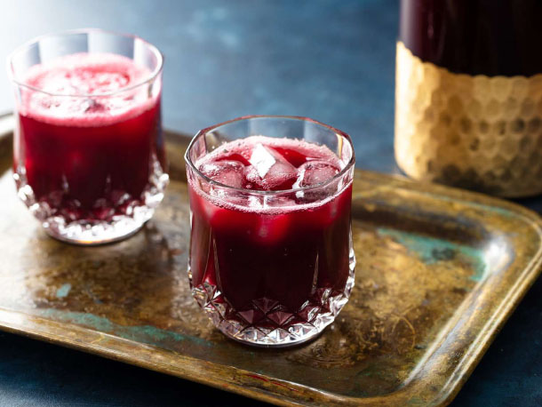

Jamaican Sorrel

Description
Typically a holiday drink, this spicy non-alcholic brew is sure to leave your guest asking for more.
Made from an Hibiscus plant and seasoned with ginger, this spicy, tart, yet sweet concoction is something
that should be enjoyed outside the holidays (I know I do :]).
Ingredients
- 5 1/4 ounces (150g; about 3 cups) dried sorrel (hibiscus), rinsed with cold water in a colander or strainer
- 3/4 pound (350g) peel-on fresh ginger, washed and grated
- 10 whole cloves
- 10 allspice berries, roughly crushed with the side of a knife
- 1 pound 1 1/2 ounces (495g; about 2 1/2 cups) sugar
Steps
- In a 4- or 5-quart pot or Dutch oven, bring 3 quarts water to a boil. Add sorrel, grated ginger,
cloves, and crushed allspice, and boil until the sorrel begins to plump and swell, about 8 minutes.
- Remove from heat and let stand until cooled, then continue to steep in an airtight vessel in the refrigerator for at
least 8 hours and up to 3 days.
- Strain the liquid through a fine-mesh strainer or through cheesecloth into a large pitcher, pressing on solids
to express as much liquid as possible. If needed, strain again until it is clear of any ginger remnants. Discard solids.
- In a 2-quart saucepan, bring 2 cups of water to a boil with the sugar. Continue to cook, stirring,
until sugar has completely dissolved. Remove simple syrup from heat.
- Stir simple syrup into the strained sorrel, 1/2 cup at a time, until desired sweetness level is reached.
- Chill until ready to drink. Serve over ice.
Go Back to Home